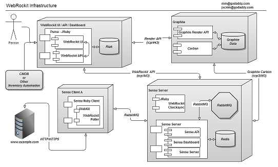

Welcome to the Github pages for WebRockit
WebRockit uses a headless web browser to measure how fast web pages load, relative to what a real user might experience. WebRockit also captures interesting metrics about the page load (time to first byte, number of assets, size of response, etc) and can draw some time-series graphs using that data. WebRockit is intended for periodic collection of this data, but is not intended to stress test a web host. WebRockit combines the scalability of Sensu, the accessibility of Graphite, backed by the reliability of WebKit. WebRockit is designed for a web-ops audience, but is a useful toolkit for the entire spectrum of web professionals. WebRockit will run on Centos/RHEL 6.x with our initial public release, with support coming for Fedora, Debian, Ubuntu, and other popular Linux distributions. WebRockit may work without much modification on other operating systems, but we haven't fully tested other combinations (yet).
WebRockit comes with instructions on how to bring up new Graphite and Sensu server components, but may also fit in with existing Graphite and Sensu services you are already running. WebRockit aims to provide all necessary services where all the services are geographically local to each other, but may function when communicating with geo-remote services (YMMV).
WebRockit exposes a REST API so url checks can be added/changed/removed through automation. We follow the GD API specification. The WebRockit UI uses the API to handle all aspects of the human visualiation and administration interface. WebRockit also includes a component to apply checks to Sensu and restart Sensu services where necessary, using the WebRockit API. WebRockit is able to poll sites which do not have active public DNS or where you wish to override the standard DNS resolution for a host.
WebRockit is able to poll at least 500 unique URLs every 5 minutes where each URL is less than 1.5MB in size, from a single polling server (with 1GB ram, 1x 1.8Ghz quad core Xeon). It can operate at much higher volumes than this, but this gives at least some idea on expectations when sizing server real-estate. Spinning up 2 virtual instances with most c-word providers (one for sensu/graphite/ui server, one for the poller client), with about 1GB of ram each, will be enough to query and measure several hundred URLs. 
While it is technically possible to mash this toolkit into other purposes (OpenStack service monitoring you say? Go on..), we don't encourage it (yet). This toolkit has one main job, and that's to measure how webpages load over time in a browser. Franken-steining this into other tasks might work -- but we would caution: understand what problems you are trying to solve first, before you end up building a bridge to Mars. So far, we haven't found a great open source solution to address our challenges, so that's why we did this.
If you add network-diversity to where the polls are made from, you can get a bit of triangulation. While that's nifty and potentially useful (West Coast vs East Coast perspective?), one important thing this suite doesn't do yet is tie activity to performance. One cannot rely solely on this data to make business decisions. You must understand what activity is leading to your performance state. This can mean diving into answering questions such as:
- Is my cpu a bottleneck? Are my cores %100 busy for my poorly threaded application?
- Are my requests periodically being served from a cold cache or hitting a cache's max TTL? (DNS, opcode, inode, dentry, TCP metrics, DB query cache, and so on)
- Am I hitting a network resource limitation? (Saturated link, asynchronous route through a lossy channel, etc)
- And more!
We hope to eventually include concurrent activity data point collection for folks that control their own infrastructure, so that bottlenecks can be identified and alarms can be raised -- but that is further down in our list of goals. Even in that space, correlation is not always causation (and only sometimes).
WebRockit is released under the MIT license, and bundles other liberally licensed OSS components. Do what you want with it, but remember: sharing is caring. Through technology, we hope to make the world a better place for our human sisters and brothers.